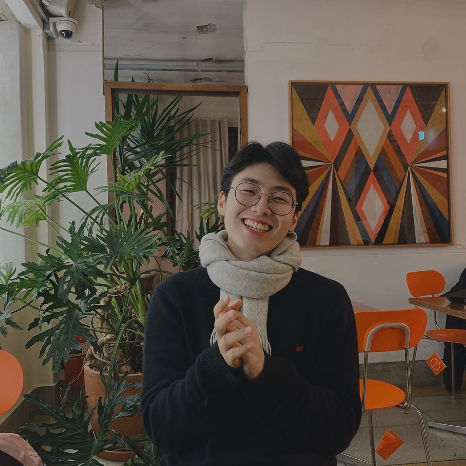
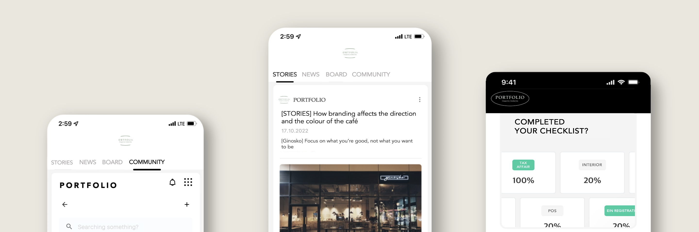
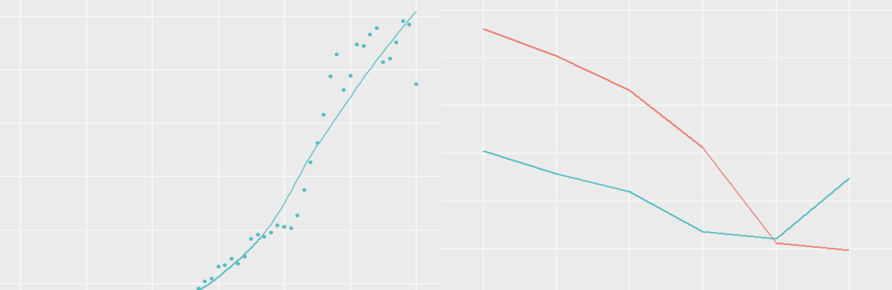

안녕,
I'm Chanhee Kim
A CX/UX Planner, who meets and creates EXPERIENCE.
You are so welcomed here!
A CX/UX Planner, who meets and creates EXPERIENCE.
You are so welcomed here!

This is me
B.S. at Stony Brook University
Major: Technological Systems Management
Minor: Engineering and Technology Entrepreneurship
Major: Technological Systems Management
Minor: Engineering and Technology Entrepreneurship
I love challenging, overcoming and failing new areas I haven’t explored. This audacity helped myself in becoming a bridge between technology and society, not by blindly assimilating but by establishing a genuine understanding between them.
This is me
B.S. at Stony Brook University
Major: Technological Systems Management
Minor: Engineering and Technology Entrepreneurship
I love challenging, overcoming and failing new areas I haven’t explored. This audacity helped myself in becoming a bridge between technology and society, not by blindly assimilating but by establishing a genuine understanding between them.
Projects

PORTFOLIO
A start-up platform for coffee industry. Based on AI and KNN algorithm, we provide the most feasible consulting that leads to actual foundation.

Case Study for Rwanda
A case study for efficient support on electricity in Rwanda. Acknowledged problems, visualised with R and
provided feasible solutions.
provided feasible solutions.

ICT Infrastructure for Azerbaijan
An ICT Infrastructure for Azerbaijan along with UN’s SDGS Goal 9. Planned to establish electrical transportation, efficient resource use and smart farm.


Project_UnderDream
A start-up project that aims to encourage children who are socially marginalised. Provided marketing, research and visions for the project.
* Description in Korean
* Description in Korean
Campus
Involvements
Involvements
2022
2021
2020
08.2022 - 12.2022
Vice President & Executive Board Member of
SBU Sanger Hall Council
SBU Sanger Hall Council
08.2021 - 05.2022
President & Executive Board Member of
SUNY Korea KAIROS
SUNY Korea KAIROS
02.2021 - 11.2021
Resident Assistant in
SUNY Korea
SUNY Korea
08.2020 - 05.2021
President & Executive Board Member of
International Christian Club
International Christian Club
2022
2021
2020
08.2022 - 12.2022
Vice President &
E-board Member
üìçSBU Sanger Hall Council
E-board Member
üìçSBU Sanger Hall Council
08.2021 - 05.2022
President &
E-board Member
üìçSUNY Korea KAIROS
E-board Member
üìçSUNY Korea KAIROS
02.2021 - 11.2021
Resident Assistant
üìçSUNY Korea
üìçSUNY Korea
08.2020 - 05.2021
President &
E-board Member
üìçInternational Christian Club
E-board Member
üìçInternational Christian Club